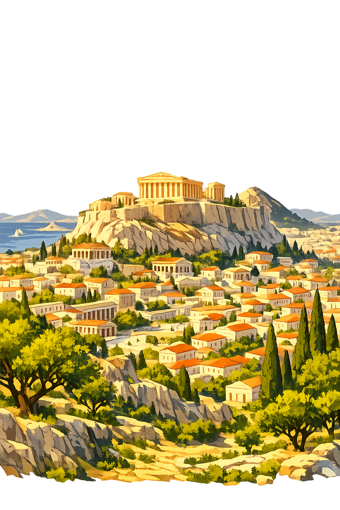

The Authentic Orthography
City of Athena · Cradle of Democracy · The Glorious City

Why athēnai.com is the correct form
Ἀθῆναι
The name in its original Attic Greek form. A plural toponym meaning "the city of Athena." The macron on the eta (ῆ) marks the long vowel that distinguishes the name from its shorter counterpart. In the mouths of the ancients, the word resonated with the full weight of civic identity.
ATHENAI
Stripped of its Greek identity, the name was reduced to seven Latin letters. Tour guides and travel agencies claimed it. The long vowel — the very length that distinguished the goddess's city in verse and oath — was erased by systems that only understand A–Z.
Athēnai
The macron on the ē restores the quantitative length of the original Greek eta. This is not decoration — it is philological accuracy. The domain encodes to Punycode, but the browser displays the truth: this is not the English "Athens." This is the Greek Athēnai.
athēnai.com → xn--athnai-r3a.com
The non-ASCII character ē (U+0113) is encoded while the ASCII remains visible. To the DNS, it is Punycode. To humanity, it is Athēnai.
How the city was truly spoken
Where democracy, philosophy, and art were born
Athēnai was not merely a city. It was the cradle of democracy, the beating heart of classical civilization, and the architectural wonder of the ancient Mediterranean. From the rock of the Acropolis to the harbor of Piraeus, every stone bore the imprint of civic ambition and divine favor.
The sacred rock rises above the city, crowned by the Parthenon — temple of Athena Parthenos. Built under Pericles, it remains the supreme symbol of classical Greece and architectural harmony.
The civic heart where citizens gathered, merchants traded, and philosophers debated. The Stoa of Attalos and the Temple of Hephaestus still stand among the ruins of public life.
The hill where the Assembly of the People met. Here, any citizen could stand and speak. This was the birthplace of democracy — the demos in action.
The world's first theatre, carved into the southern slope of the Acropolis. Here Aeschylus, Sophocles, and Euripides premiered the tragedies that defined Western drama.
From Bronze Age citadel to modern capital
Before the classical age, a Mycenaean palace stood upon the Acropolis. The name Athēnai appears in Linear B tablets as a-ta-na, linking the Bronze Age settlement to its later glory. The rock was sacred long before the Parthenon rose.
In 594 BCE, the lawgiver Solon abolished debt slavery, reformed the constitution, and laid the groundwork for citizen rule. His poems survive as the earliest Athenian political literature — the voice of a city learning to govern itself.
From 461 to 429 BCE, Pericles guided Athēnai to its zenith. The Parthenon rose. The fleet ruled the Aegean. Socrates questioned citizens in the Agora. This was the moment that would define "classical" for all time — a burst of creativity never matched.
The long struggle against Sparta (431–404 BCE) ended in defeat, plague, and the temporary fall of the democracy. Yet even in loss, Athēnai produced Thucydides — the father of scientific history — whose work remains a study of power and human nature.
Roman Athens respected its heritage; emperors like Nero and Hadrian built here. The Byzantine era saw the Parthenon become a church, the Ottoman era a mosque. In 1834, the newly independent Greek state made Athēnai its capital once more — the city reborn.
More from the Greek world
All attested forms of the city's name
The Unicode restoration with macron on the eta, preserving the ancient Greek quantitative length. This is the canonical form.
The stripped ASCII form, usable where Unicode is unavailable. Historically attested but orthographically incomplete — the length is lost.
English "Athens" is the Latinized form derived via Roman Athenae. Athēnai preserves the Greek plural with macron — a direct claim on the city's authentic voice.
See how Athēnai behaves in the PUNYCODEX Type Tool — with predictive autocomplete, character-by-character breakdown, and scholarly constraint validation.
athenai
→
Athēnai
Athēnai is the city. The place where democracy was first spoken, where philosophy walked in the Agora, where the Parthenon still catches the morning sun. But it is not alone. Across the encoded web, the authentic names of the Greek world have been restored — each with its own domain, its own lore, its own truth.
This is not a directory. This is a resurrection.
Enter the Codex